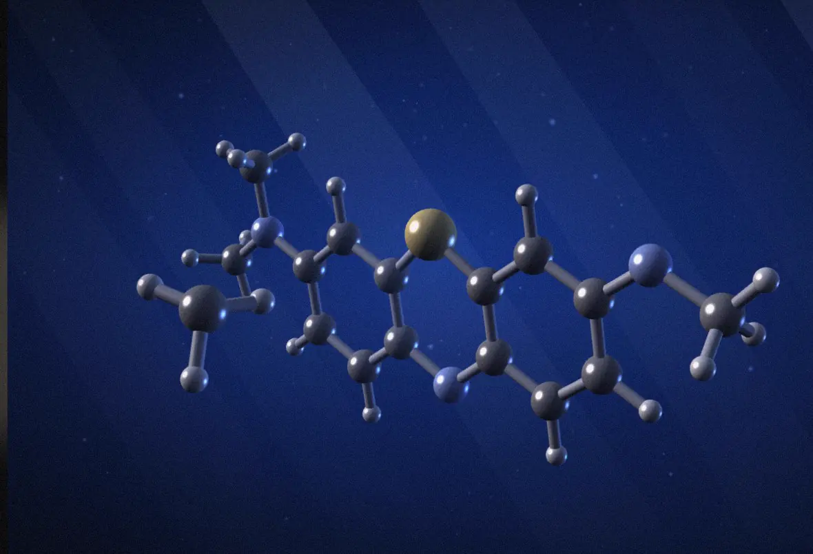
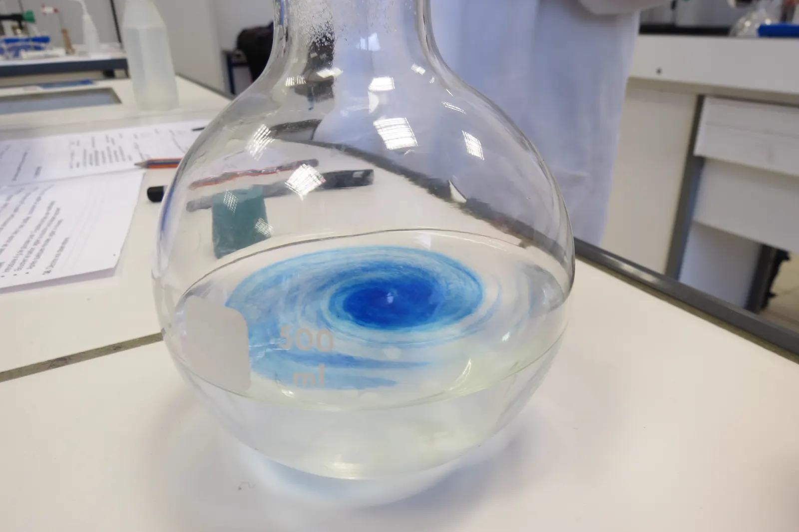

gibt Energie weiter
Photosensibilisator
Fängt Licht ein und überträgt die Energie auf ein anderes Molekül (Energietransfer). Beispiel: Methylenblau → Sauerstoff.
Unser Projekt 2027
Ein Farbstoff fängt Licht ein – und geht genau dadurch kaputt. Hier sieht man, wie das Molekül aussieht und was in seinem Inneren passiert.
3D-Animation: rotes LED-Licht (660 nm) trifft die Probe in unserer Messbox

Unser Modellstoff
16 Kohlenstoff-, 18 Wasserstoff-, 3 Stickstoff- und ein Schwefelatom. Das Herzstück sind die drei flachen Ringe in der Mitte: Dort schluckt das Molekül rotes Licht – deshalb sieht es blau aus. Gut erforscht, günstig, sicher zu handhaben – und es bleicht sichtbar aus.
Zum Drehen ziehen · Rot = ein Lichtteilchen trifft das Molekül · 3D-Struktur: PubChem [19]
Das Prinzip in vier Schritten
Ein Farbstoff, der Licht einfängt und die Energie weitergibt. Schritt für Schritt wird klar, warum er dabei selbst ausbleicht.
vereinfachtes Schema · Typ-II-Mechanismus [11]
Methylenblau (MB) schluckt ein Lichtteilchen, ein Photon. Das Molekül ist jetzt angeregt – man schreibt MB* – und trägt zusätzliche Energie. Genau das zeigt das rote Aufblitzen am 3D-Modell oben.
Statt die Energie selbst zu nutzen, gibt der Farbstoff sie an Sauerstoff weiter. Daraus wird (¹O₂) – eine sehr reaktive Form des Sauerstoffs.
¹O₂ reagiert mit fast allem in seiner Nähe – auch mit dem Farbstoff selbst. Zum Beispiel wird eine Methylgruppe (CH₃) abgespalten – im 3D-Modell ist eine davon beschriftet.
Mit jedem Durchgang gehen Farbstoffmoleküle verloren. Die Lösung wird heller, die sinkt – genau das messen wir.
gibt Energie weiter
Fängt Licht ein und überträgt die Energie auf ein anderes Molekül (Energietransfer). Beispiel: Methylenblau → Sauerstoff.
Unser Projekt 2027
gibt Elektronen weiter
Fängt Licht ein und überträgt Elektronen (Elektronentransfer). Beispiel: Proflavin in der Foto-Blue-Bottle.
Unser Projekt 2025
Die umkehrbare Seite
Methylenblau kann Elektronen und Wasserstoff aufnehmen und wird dabei farblos – zur sogenannten Leukoform. Kommt Sauerstoff dazu, wird es wieder blau. Diesen Kreislauf kennt man aus dem Blue-Bottle-Versuch.
Für unsere Messung heißt das: Ein Teil des Verblassens könnte umkehrbar sein und wäre dann keine echte Alterung. Deshalb steht der Dunkelversuch ganz am Anfang: Er zeigt, ob eine ausgeblichene Probe im Dunkeln wieder Farbe zurückbekommt.
Schema, vereinfacht
Welches Licht schluckt Methylenblau?
Die blaue Kurve zeigt, wie stark Methylenblau jede Lichtfarbe schluckt – aufgetragen über der . Die vier Linien sind unsere LEDs: Rot liegt fast auf dem Maximum, Gelb an der Flanke, Türkis und Königsblau werden kaum geschluckt.
Literaturdaten: Methylenblau in Wasser, 10 µmol/L, gemessen von S. Prahl (OMLC) [18] – keine eigenen Messdaten.

Warum Methylenblau?
Photosensibilisator
Ein Stoff, der Licht aufnimmt und die Energie an ein anderes Molekül weitergibt – bei uns an Sauerstoff. So löst er Reaktionen aus, die ohne Licht nicht ablaufen würden.
Singulett-Sauerstoff (¹O₂)
Eine energiereiche Form des Sauerstoffs. Sie entsteht, wenn ein angeregter Farbstoff seine Energie an normalen Sauerstoff abgibt, und reagiert mit fast allem in der Nähe.
Absorbanz
Ein Maß dafür, wie viel Licht eine Probe schluckt. Je mehr Farbstoff in der Lösung ist, desto höher ist sie. Bleicht der Farbstoff aus, sinkt die Absorbanz.
Photokatalysator
Ein Stoff, der mit Lichtenergie eine chemische Reaktion antreibt, indem er Elektronen weitergibt. Im Idealfall bleibt er dabei selbst erhalten.
Wellenlänge
Die Wellenlänge bestimmt die Farbe des Lichts. Sie wird in Nanometern (nm) angegeben – ein Nanometer ist ein Millionstel Millimeter. 450 nm ist blau, 660 nm tiefrot.